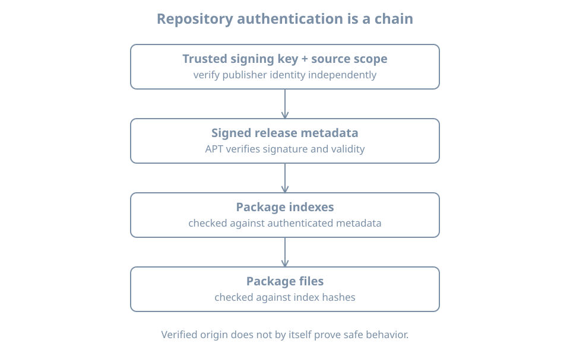

Repositories, Signatures and Source Configuration
A package name can be available from more than one repository. APT needs to know where metadata comes from, which signing keys are trusted for it, and which versions are candidates. A reachable URL alone does not establish trusted software provenance.
This chapter inspects the Ubuntu bl05-packages-lab clone and its configured package sources. It does not add a repository or import a key. Keep the package-lab console open, the original bl02 off and the setup NAT network attached as in the preceding chapter.
The authenticated repository chain
A repository publishes release metadata describing package indexes; those indexes describe package files and their checksums. APT verifies repository authentication using the configured trust material and then uses the authenticated metadata chain when retrieving packages. The APT secure manual describes the archive-authentication model.

A signature establishes that metadata was signed by a key accepted by the configured policy; it does not prove that the software is safe, that a key was obtained from the right publisher, or that the running application is uncompromised. A compromised trusted signing key or repository remains a risk. HTTPS protects transport to a validated endpoint, while repository signatures provide a separate metadata-authentication mechanism; neither replaces choosing a trustworthy source and key.
Read configured sources
APT can read a traditional one-line .list file and deb822-style .sources files. On a fresh Ubuntu 26.04 installation, ubuntu.sources is common, but imported or upgraded systems can differ. Inspect the actual files:
ls -l /etc/apt/sources.list /etc/apt/sources.list.d
sudo cat /etc/apt/sources.list.d/ubuntu.sourcesAn absent optional file produces an error; list and inspect the files that actually exist. Source entries can contain private mirror names or credentials; restrict and redact before sharing. The sources.list manual defines source formats and options.
A deb822 entry can describe Types, URIs, Suites, Components, architectures, an enabled state and Signed-By. For this lab, record the observed release suites, components, mirror and any scoped keyring. A source configuration is intent. apt-cache policy and apt update provide additional evidence about loaded indexes and refresh results.
A Signed-By value can restrict which keyring or key may authenticate that source. Keyrings, permissions and their contents must be checked according to the installed APT version and publisher instructions; do not assume every source uses the same key. A third-party signing key should be independently verified through a trusted channel and scoped to the intended source. Avoid adding an unverified key to a broad global trust store.
Connect a package candidate to sources
After the clean metadata refresh in the prior chapter:
apt-cache policy tree
apt-cache policy
apt-config dump | grep -E 'Dir::Etc::(sourcelist|sourceparts|trusted)'The first command reports the package’s installed version, candidate, priorities and available origins as known to APT. The second summarizes configured package origins and priorities. apt-config dump exposes selected configuration paths; the filter can return no lines. Interpret all results as the local cache and configuration, not an independent attestation of a remote server’s current content.
Origin, Label, Suite, Codename and a repository URI answer different questions. An authenticated Release file contains publisher-provided labels; a familiar label alone is not a fingerprint. A candidate can be the same version available from more than one source, and this policy display is not definitive historical proof of which source supplied an already installed package.
Diagnose a failed refresh
Suppose apt update reports a missing key, expired metadata or a failed signature. Preserve the exact error and source. Then:
- Confirm the guest’s time with
timedatectl statusand the intended source definition. - Check whether the configured keyring and its access permissions match the trusted publisher’s current instructions and your change record.
- Distinguish a network or mirror failure from a signature or metadata-validity failure; read the complete APT result.
- Apply a verified, authorized source or key correction using the distribution’s documented process, then run
apt updateagain and require a clean result.
Do not disable authentication, accept an unknown key, or add an unrelated repository to make an update finish. A key rotation requires a trusted verification channel and an operational plan, not a fingerprint copied from the failing mirror itself. A stale cached candidate can still appear after a failed refresh; record the failure and do not treat that candidate as freshly verified.
Practice and recall
Record the enabled source files, observed suites and components, any Signed-By scope, last clean refresh result, and the tree candidate and origins. Explain why a matching package name, reachable mirror and signed metadata each support different claims. Keep private source URLs and credentials out of shared evidence.
- A repository signature authenticates metadata under a configured trust policy.
- Source configuration, cached metadata and installed package history are distinct.
- Scope and independently verify third-party keys.
- Resolve trust errors rather than bypassing them.